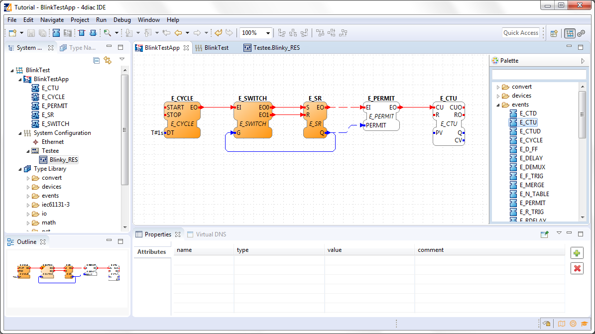
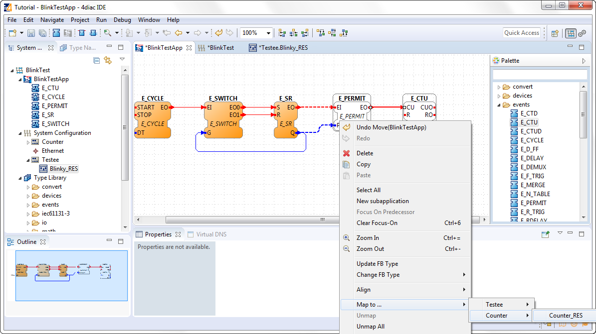
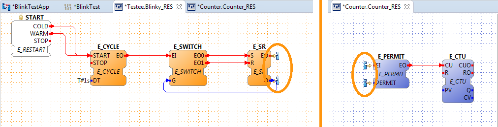
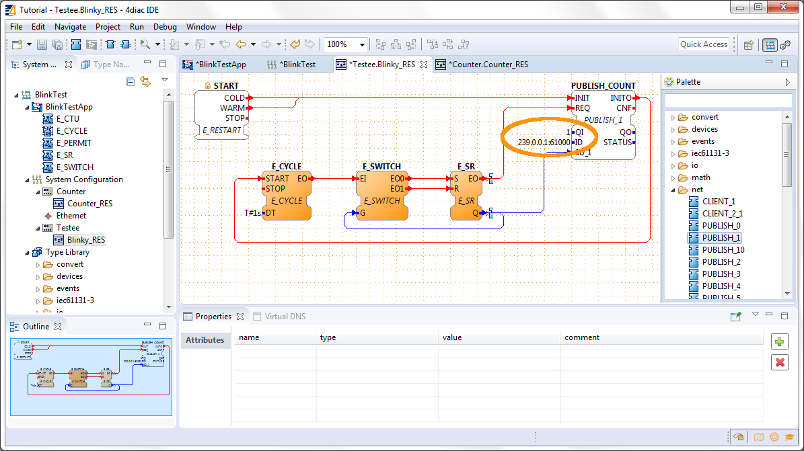

This page is part of a guide that gives a walk-through over the major 4diac IDE features.
This guide extends the blinking application of Step 1.
We want to count how many times the light has turned on.
You will learn how to distribute a IEC 61499 Application to several devices and set up the communication between them.
The example continues to run on the local computer.
The application will run on 2 devices.
The blinking part of the application will run on a 4diac FORTE and the count on another 4diac FORTE, see the architecture below.
The two different programs running on the local machine emulate two PLCs.
To count the blinking, we need to add 2 new Function Blocks (FBs) to the existing Application in the BlinkTestApp Application Editor.
Remember, Event and Data connections can not be mixed.
Change to the BlinkTest System Configuration Editor and add a second device from the Palette. The counter will run on the new device.
Change back to the BlinkTestApp Application Editor and map the two new FBs to the Resource Counter_RES. You can see the dashed connections between the two devices.
Change to the Testee.Blinky_RES or Counter.Counter_RES Resource Editor. There you can see 2 incomplete FBs at the E_SR FB or E_PERMIT. They symbolize the broken connections between the two devices. Currently they have no opportunity to communicate with each other. We fix it by adding special Communications FBs. You can find more information about broken connections here on our Homepage.
Change to the Testee.Blinky_RES Resource Editor.
Drag and Drop a PUBLISH_1 FB from the folder net of the Palette and set up the connections. The PUBLISH FB must be initialized, so it is best to connect its INIT event directly to the START.
Change to the Counter.Counter_RES Resource Editor.
Drag and Drop a SUBSCRIBE_1 FB from the folder net of the Palette and set up the connections. The SUBSCRIBE FB must also be initialized.

Change to the Deployment Perspective.

In the next step you will see how FORTE runs in another machine.
If you want to go back to the original Blinking application without buttons, here's a link
Step 1 - Use 4DIAC-IDE locally
If you want to go back to the Start Here page, we leave you here a fast access